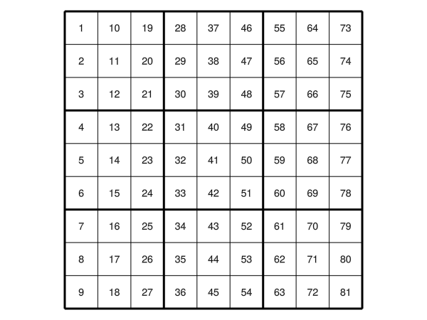

Sudoku
A sodoku grid made with major and minor grid-lines.
function mk_axis(ax)
Axis(ax, aspect = DataAspect(),
xgridcolor = :black,
ygridcolor = :black,
xgridwidth = 3,
ygridwidth = 3,
xminorgridcolor = :black,
yminorgridcolor = :black,
xminorgridvisible = true,
yminorgridvisible = true,
xminorticks = IntervalsBetween(3),
yminorticks = IntervalsBetween(3),
xticksvisible = false,
xticklabelsize = 0.0,
yticklabelsize = 0.0,
yticksvisible = false,
)
end
function plot_mat!(ax,mat)
i, j = size(mat)
text!(ax,
vec(Point2f.(Tuple.(CartesianIndices(mat)))) .- repeat([[0.5, 0.5]], i*j ),
text = vec(string.(rotr90(mat))),
align = (:center,:center),
)
xlims!(0,i)
ylims!(0,j)
end
mat = reshape(collect(1:81), 9,9)
f = Figure()
ax1 = mk_axis(f[1,1])
plot_mat!(ax1,mat)
f
